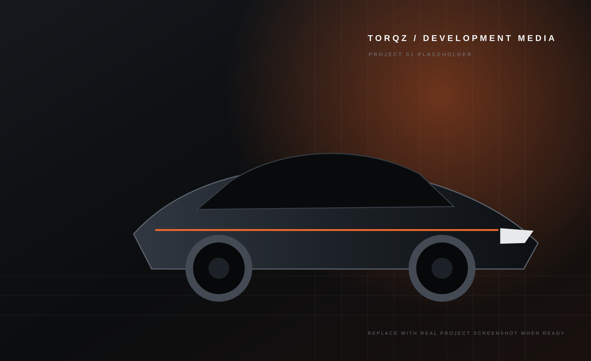

Built for
BeamNG.
High-quality BeamNG.drive projects built with attention to detail, presentation, compatibility, and installation — with honest release information from preview to download.
Current Project
A large-format project reveal instead of a tiny card. Real screenshots will replace development media when Project 01 is ready.
Torqz Projects
The library grows only when real projects exist. Future slots stay clearly marked instead of pretending unfinished ideas are releases.
Mods should
feel finished.
Torqz Mods treats presentation, compatibility notes, installation, and support as part of the mod itself. A release should be clear before you download it and easy to understand after you install it.
Quality
Fewer projects, stronger presentation, and no pressure to fill the site with fake content.
Clarity
Version, compatibility, status, file information, and changelog details stay obvious and honest.
Support
Installation help, bug reporting, and community support are treated as part of the release experience.
Latest From Torqz
Development updates are data-driven so new posts can be added without rebuilding the page.
Built for the
BeamNG community.
Follow development, get installation help, report problems, and see new releases when Torqz projects are ready.